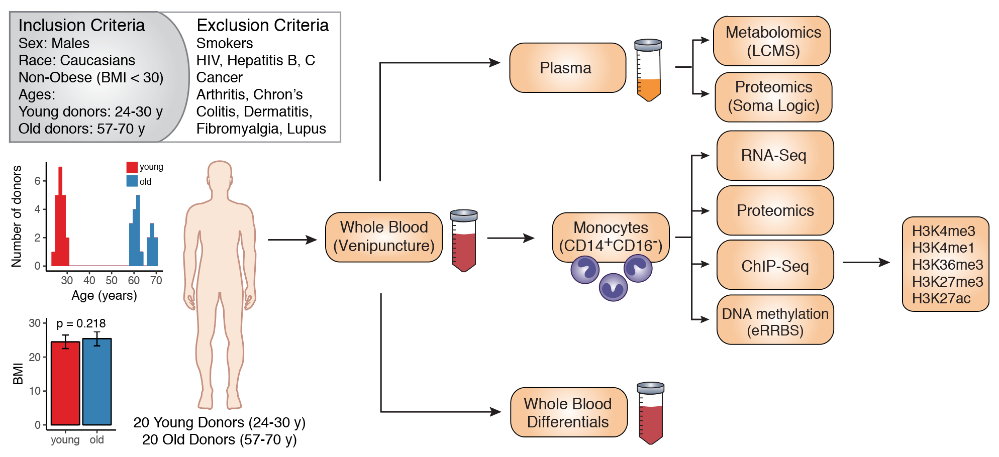

This page contains description and materials of the experiment.
Aging is accompanied by alterations happening in the whole organism and within the individual cells.
Our study aims to comprehensively characterize changes happening in the distinct human cell type and its environment
during the process of healthy aging.
We have compared classical CD14+CD16- monocytes obtained from blood of two sex- and race-matched cohorts: 20 young
individuals (24-30 years old) and 20 older people (57-70 years old) without any acute or chronic inflammatory
conditions, no history of smoking, and with comparable body-mass indices.
We comprehensively characterized the plasma and classical monocytes from both cohorts using proteomic and
metabolomic profiling, RNA-Seq, RRBS (DNA methylation) and ULI-ChIP-seq for 5 major chromatin modifications
(H3K27ac, H3K27me3, H3K36me3, H3K4me1, H3K4me3).
Initial analysis revealed significant difference in metabolic and proteomic composition of plasma, as well as in DNA methylation levels of monocytes between two cohorts but no significant transcriptional difference. Strikingly, no changes in chromatin modifications were observed between two cohorts. However, integrative analysis revealed that specific chromatin patterns poise age associated DNA methylation changes, providing different positional clues to hyper- and hypo-methylation of DNA.
The comparative epigenetic study of this scale has never been undertaken previously in the context of human aging. Since the peak calling routine presents significant challenge in working with large scale human epigenetic data, we developed a novel semi-supervised peak calling approach applicable to datasets of this scale.
Along with the pioneer dataset, we provide a completely new integrative solution for ChIP-seq analysis.